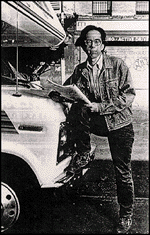

Indie giant John Pierson cuts to the bone
By Chris Garcia, American-Statesman film writer

At a South by Southwest film panel Saturday titled "Whither Alternative," Variety critic
Emanuel Levy called for a wholesale moratorium on copycat Tarantino movies.
"No more neo-noir or hitmen," Levy implored. "Hitmen are not cool. Hitmen are not funny.
Someone should do a tragedy about hitmen. No more stupid, cool guys pointing guns at each other."
The rapt full-house sat hushed, but you could almost hear the nods of agreement.
Then indie film guru John Pierson, unmistakable with his rangy frame, owlish visage and
tumbleweed in place of hair, beseeched the audience. "No more vampire movies," he
said tartly.
The quiet crowd cracked-up, not so much because Pierson had exposed an idea so true it's funny
(which he had), but because of how he said it. Sharply, with a New York velocity, the words
pushed by the huff of a sigh. Pierson's opinions—brash and bare. knuckled—come wrapped in
plain-paper weariness, with a barbed-wire bow.
As Pierson demonstrated repeatedly during the otherwise agreeable confab, his prowess as a
pundit lies in his capacity to slice to the marrow of things, using the swift swipe of a
realist who no longer has the energy to booster simply for decorum's sake. The truth hurts.
Get used to it.
When he sassily contradicted another panelist (after broadsiding the Village Voice and before
saying, "I'm getting worked up" and placing his hands over his mouth), moderator Ruby Leaner
described the shift in tone as "internecine warfare." It was a fine moment. It was a quintessential
Pierson moment
Pierson made his name in indie-dom as a producers' rep for a roll call of seminal
low-budget masterworks, including "She's Gotta Have It," "The Thin Blue Line," "Slacker,"
"Clerks," "Laws of Gravity," "Roger & Me" and "Crumb." He introduced himself to the
general public via his indispensable 1996 book "Spike, Mike, Slackers & Dykes: A Guided
Tour Across a Decade of Independent Cinema," a witty, vivid, downright picaresque chronicle
told from the front lines of the industry. University film courses have claimed it as a text.
The voluble Pierson, who heads the completion funding group Grainy Pictures, was hanging out at
SXSW as part of his travels for his year-old Independent Film Channel series about indie
filmmakers, "Split Screen," which begins a new season April 6. For one week each month in a
modest RV Pierson and his two-person crew tool around the country in the pursuit of giving young
filmmakers their due.
He's producing segments on several SXSW filmmakers, including Kyle Henry ("American Cowboy")
and Spencer Parsons who are working on a short about the closing of the Texas Union film program
titled "Orson Welles, Not Taco Bells."
Between shots, I spoke with Pierson inside his cramped RV, parked outside the Austin
Convention Center.
Q: You get reams of video solicitations from young filmmakers each year. How many of
them are actually good?
A: "Good"? What kind of word is that? "Watchable" is the word we use. I'd say half are
watchable. Ten percent might be good.
Q: You seemed to be the only re alist on the panel "Whither Alternative," the single
person willing to make negative comments.
A: People love the success stories. The whole idea in "Spike, Mike" was to give some
really fantastic achievement stories of Spike Lee or Kevin Smith. But the other side, which
people in rosecolored glasses don't see, is a cautionary tale. For anybody who is a so
called overnight sensation there are literally dozens of other people who were completely
thwarted and dashed in their attempts to become a filmmaker.
Q: Is there an unmanageable glut of indies today?
A: The typical response is that indie films are being squeezed out by Hollywood films.
But really they're being squeezed out by other indie films. In New York you might have a
Friday when four are opening. It's crazy. People don't know which ones to go to so they
don't go to any.
Q: Where does SXSW stand in the thicket of indie festivals?
A: It's coming on very strong. I've been proud to be here every year to help it get
its sea legs. It was a baby learning to walk and now it's this giant making big strides.
SXSW has been in a prime position to be in the top five or six festivals because it's two
months after Sundance. The timing is really an effective element that's made this thing happen.
Q: What to you are must-sees this year at SXSW?
A: "Divine Trash" . . . I'm not really keen on a lot of the dramatic features.
Q: so, no more vampire movies?
A: The best vampire movie of the breed was made in Texas and that was "Near Dark."
Q: Have you seen Larry Fessenden's "Habit"?
A: Larry Fessenden's a cool guy and everything and "Habit" is beautiful looking, but
there's a reason he couldn't get a distribution deal and that's because he made yet another
vampire movie. He's up for the best director award at the Spirit Awards, if you can believe that.
Q: What filmmaker should we look out for as the next big name in indies?
A: A huge, huge talent named Chris Smith. He's from Milwaukee and he made one of the
films that was on the Fuel Tour, "American Job." It's a demanding but amazingly well-made film.
He's already surpassed it with a second feature called "The Making of Northwestern" that's
five times better. He is a fantastic filmmaker. He's the guy for me. He's the future.